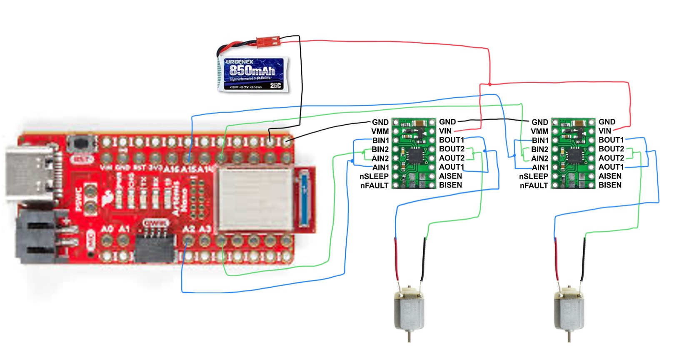
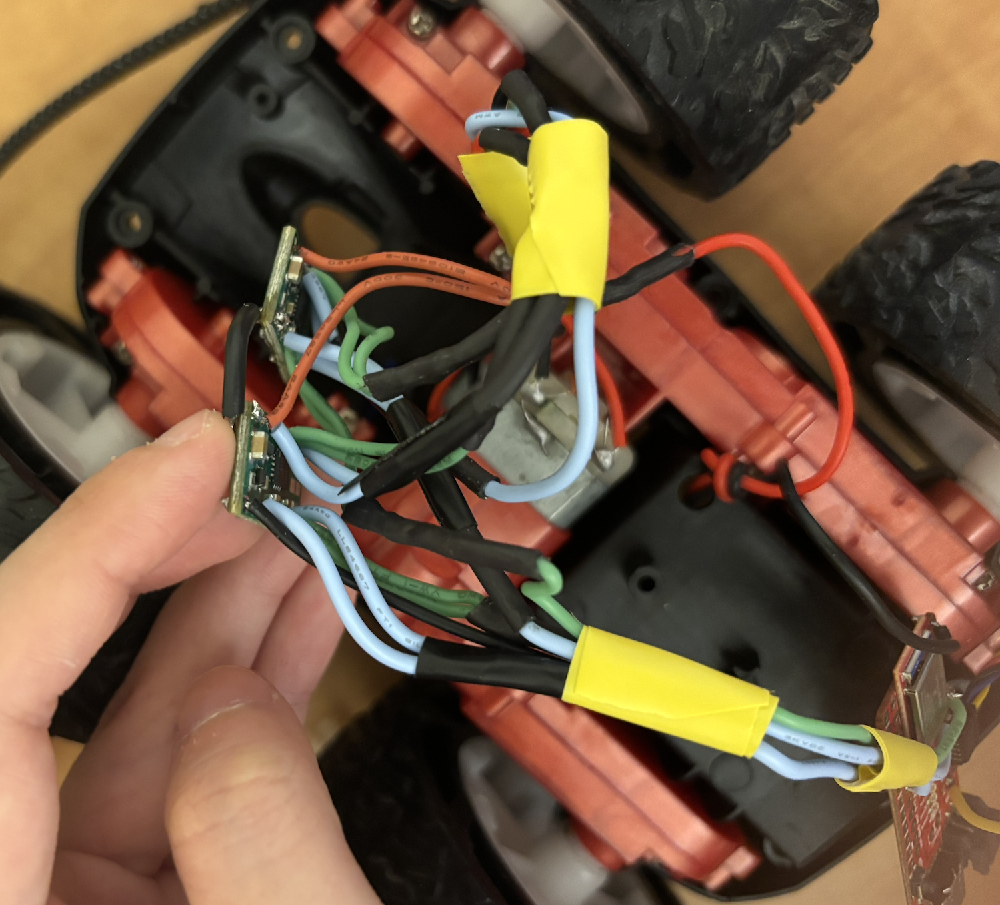
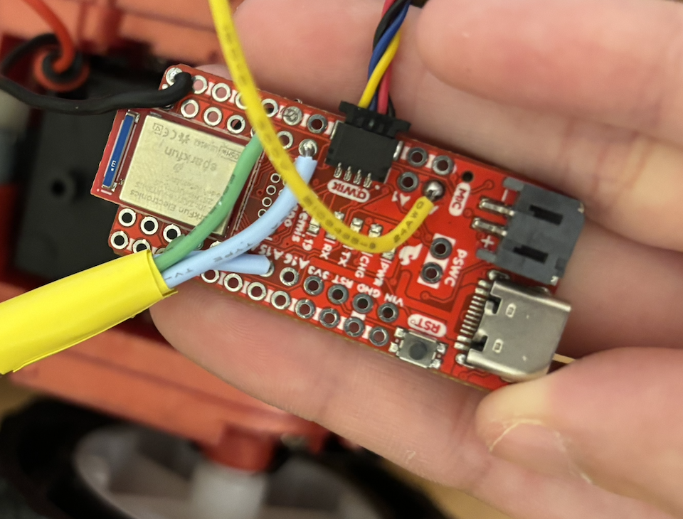
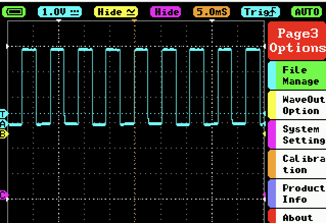
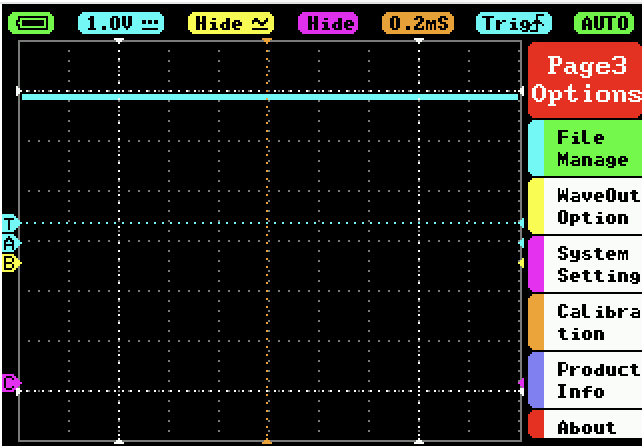
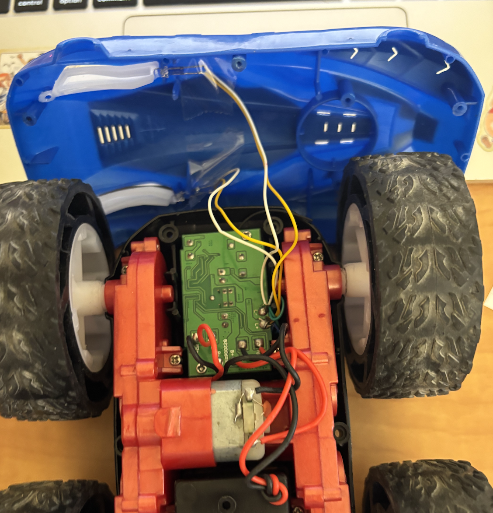
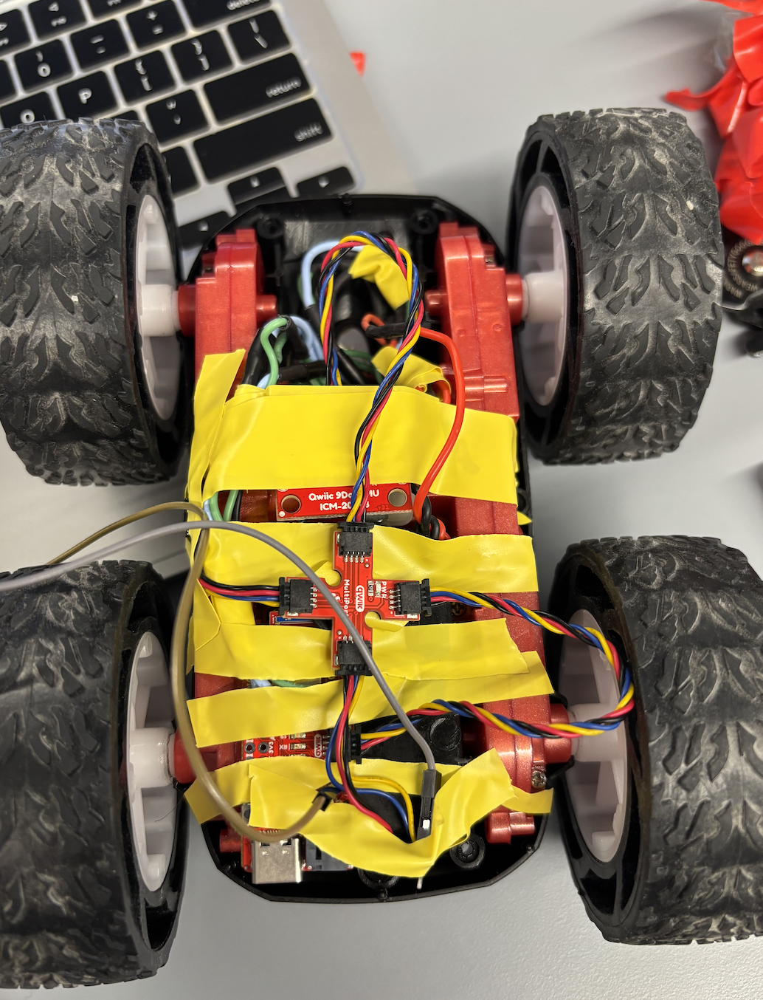
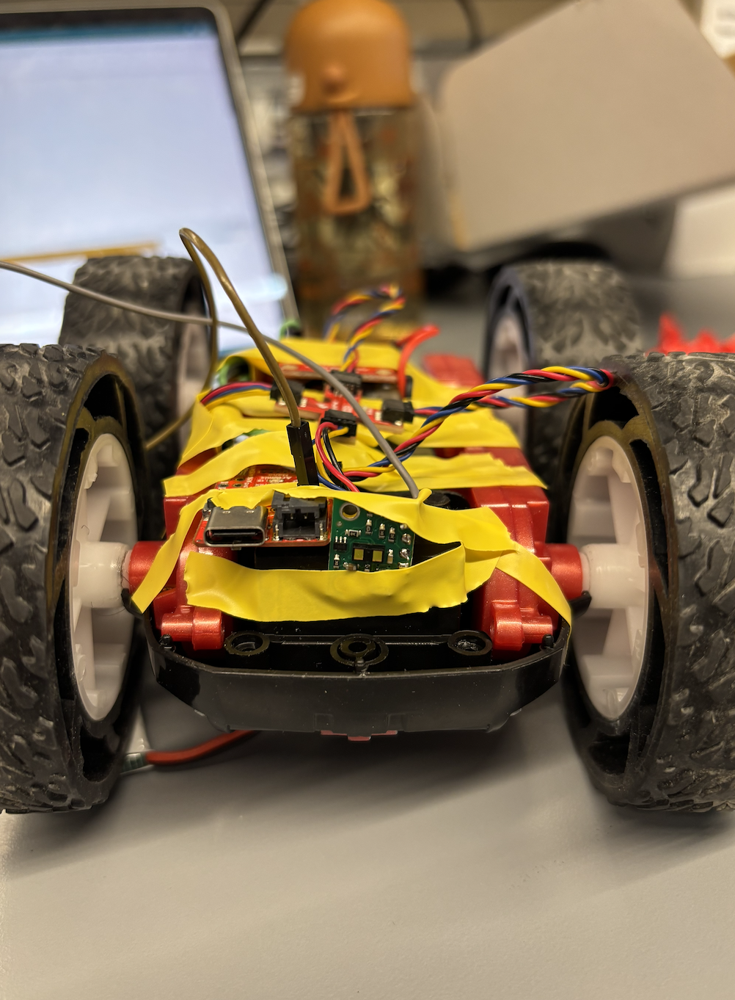
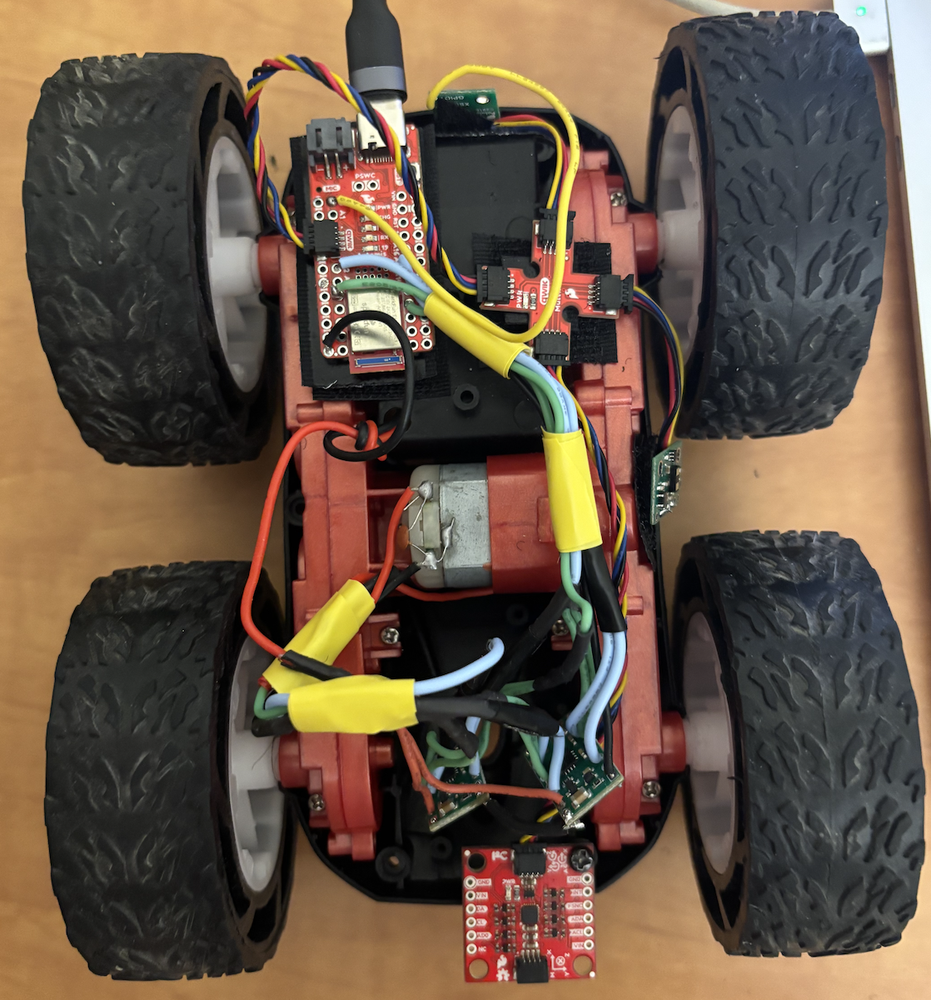
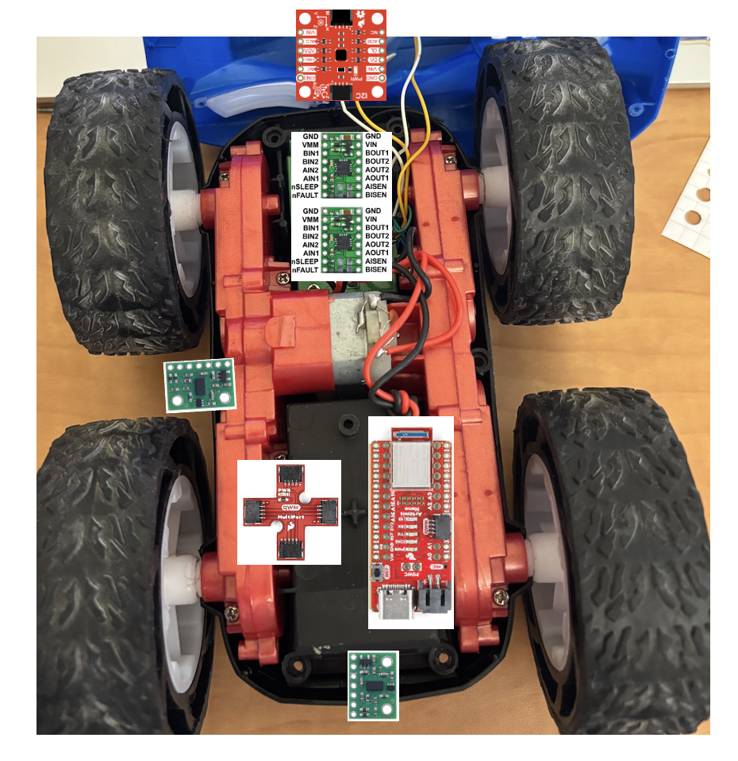

Lab 4: Motors and Open Loop Control
Objective
The purpose of this lab is to change from manual to open loop control of the robot. This involves hooking up the Artemis board to two dual motor drivers, testing the motor drivers with the bench power supply, installing everything in the car chassis, and demonstrating open-loop control by programming sequences of movements (forward, backward, turns) using timed PWM signals.
Prelab
Power Architecture: Separate Batteries for Artemis and Motors
The Artemis and motor drivers are powered by separate batteries for several critical reasons:
- Different voltage requirements: The Artemis needs a precise 3.3V (regulated from battery) while motors can tolerate voltage fluctuations (3.7V–4.2V).
- Voltage sag under load: Motors draw high current during startup, acceleration, or stall (2–3A), causing the battery voltage to drop temporarily. If the Artemis shares the same battery, the voltage could drop below 3.3V, causing brownout, loss of BLE connection, sensor data corruption, and control system failure.
- Electrical noise isolation: Motors generate electromagnetic interference (EMI) and voltage spikes from PWM switching. Separate batteries minimize the coupling of motor noise into the Artemis circuit, preventing crashes and sensor glitches.
- Safety and debugging: If motors short-circuit or draw excessive current, only the motor battery is affected—the Artemis stays powered so telemetry and debug information remain accessible.
Common ground: Although the batteries are separate, the Artemis GND and motor battery GND must be connected so PWM signals have a common reference.

Task 1: Connect Motor Drivers with Parallel-Coupled Channels
I connected one DRV8833 dual motor driver to drive a single motor using parallel-coupled inputs and outputs. This configuration uses both channels (A and B) of the dual motor driver to drive one motor, doubling the available current without overheating the chip.
Parallel Coupling
On each DRV8833 board:
- AIN1 connected to BIN1
- AIN2 connected to BIN2
- AOUT1 connected to BOUT1 → Motor positive terminal
- AOUT2 connected to BOUT2 → Motor negative terminal
Since both channels are on the same IC with shared clock circuitry, timing is not an issue. The DRV8833 is rated for 1.2A per channel, so parallel coupling allows up to ~2.4A per motor (well above the stall current of these small motors).
Motor polarity doesn't matter at this stage—flipping the polarity only reverses the direction (CW vs CCW), which is controlled in software.

Artemis to Motor Driver Connections
I wired the Artemis GPIO pins to the motor driver inputs as follows:
- Motor 1 (right, front view):
AIN1-BIN1 → Pin 12,AIN2-BIN2 → Pin A15 - Motor 2 (left):
AIN1-BIN1 → Pin A2,AIN2-BIN2 → Pin 4
These pins were chosen because they support PWM via analogWrite() and are
evenly spaced on the Artemis Nano. Pin definitions in code:
// Motor 1 (right, front view) pins
#define MOTOR1_IN_PLUS 12
#define MOTOR1_IN_MINUS A15
// Motor 2 (left) pins
#define MOTOR2_IN_PLUS A2
#define MOTOR2_IN_MINUS 4
Power Supply Settings for Initial Testing
For initial debugging, I powered the motor driver VIN from a benchtop power supply with adjustable current limiting. Settings:
- Voltage: 3.7V (matches the 850mAh battery nominal voltage)
- Current limit: 1.5A–2A (protects against shorts and provides headroom for motor startup spikes)
The DRV8833 supports 2.7V–10.8V input, so 3.7V is well within spec. The original RC car used 2× AA batteries (~3V), so 3.7V provides adequate torque without overstressing the motors.
Task 2: Generate PWM Signals and Test Motor Control
I wrote a test program to verify motor driver functionality before integrating everything into the chassis. The code cycles through forward, stop, backward, stop with a 5-second delay between each state:
int pwm_speed = 128; // 50% duty cycle (0-255 range)
void loop() {
Serial.println("Move forward");
forward(pwm_speed);
delay(5000);
Serial.println("Stop!");
stop();
delay(5000);
Serial.println("Move backward");
backward(pwm_speed);
delay(5000);
Serial.println("Stop!");
stop();
delay(5000);
}
void forward(int speed) {
analogWrite(MOTOR1_IN_PLUS, speed);
analogWrite(MOTOR1_IN_MINUS, 0);
}
void backward(int speed) {
analogWrite(MOTOR1_IN_PLUS, 0);
analogWrite(MOTOR1_IN_MINUS, speed);
}
void stop() {
analogWrite(MOTOR1_IN_PLUS, 0);
analogWrite(MOTOR1_IN_MINUS, 0);
}Oscilloscope Verification
I used a MiniWare DS212 oscilloscope to verify the PWM signals at the motor driver outputs.
Figure 4 shows a clean 50% duty cycle square wave (~1kHz) at pwm_speed = 128:

Figure 5 shows the PWM signal at 100% duty cycle (pwm_speed = 255)—the
output is held HIGH continuously:

Both motors responded correctly to forward, backward, and stop commands when powered from either the benchtop supply or the 850mAh battery.
Task 3: Remove Original RC Car Circuit Board
I disassembled the RC car by removing the original circuit board and headlight LEDs. I cut the motor and battery connector wires as close to the board as possible to preserve wire length for future connections.

Tasks 4–6: Dual Motor Control and Robot Assembly
I extended the movement helper functions to control both motors simultaneously:
void forward(int speed) {
analogWrite(MOTOR1_IN_PLUS, speed);
analogWrite(MOTOR1_IN_MINUS, 0);
analogWrite(MOTOR2_IN_PLUS, speed * 1.9); // Calibration factor
analogWrite(MOTOR2_IN_MINUS, 0);
}
void backward(int speed) {
analogWrite(MOTOR1_IN_PLUS, 0);
analogWrite(MOTOR1_IN_MINUS, speed);
analogWrite(MOTOR2_IN_PLUS, 0);
analogWrite(MOTOR2_IN_MINUS, speed * 1.9);
}
void stop() {
analogWrite(MOTOR1_IN_PLUS, 0);
analogWrite(MOTOR1_IN_MINUS, 0);
analogWrite(MOTOR2_IN_PLUS, 0);
analogWrite(MOTOR2_IN_MINUS, 0);
}
The 1.9x multiplier on Motor 2 is a calibration factor to compensate for
motor speed mismatch—Motor 2 spins slower than Motor 1 at the same PWM value, so the
higher gain brings them into alignment for straight-line driving.
Robot Assembly
I mounted all components inside the car chassis using electrical tape initially, then switched to velcro for easier maintenance. The IMU is screwed down at the rear for stability. The two motor drivers sit in the cavity where the original RC PCB was located.




Both motors responding to forward, backward, and stop commands.
Task 8: Lower Limit of PWM for Ground Movement
To determine the minimum PWM value at which the robot can move forward and perform
on-axis turns on the ground, I started at pwm_speed = 40 and decremented
by 5 until the robot stopped moving.
Result: The robot moves reliably at pwm_speed = 25.
At pwm_speed = 20, the robot does not budge—static friction overcomes
the motor torque. The battery was fully charged (4.2V) for this test.
Testing the lower PWM limit. Robot moves at PWM = 25, stops at PWM = 20.
Task 9: Calibration Factor for Straight-Line Driving
The two motors do not spin at the same rate at identical PWM values. After testing various multipliers, I found that Motor 2 requires 1.9× the PWM value of Motor 1 to achieve the same rotational speed.
With pwm_speed = 100 and the calibration factor applied, the robot drives
in a fairly straight line. Moving forward 1 meter corresponds to approximately
delay(6000) ms at this speed.
Note: The robot experienced a hardware failure before I could record a video of straight-line driving for the report.
Task 10: Open Loop Control Demonstration
To demonstrate open-loop control, I programmed the robot to execute the following sequence:
- Move forward 1m
- Move backward 1m (return to start)
- Rotate clockwise 180°
- Rotate counter-clockwise 360°
Rotation Helper Functions
void rotateCW(int speed) {
// Right motor backward, left motor forward
analogWrite(MOTOR1_IN_PLUS, 0);
analogWrite(MOTOR1_IN_MINUS, speed);
analogWrite(MOTOR2_IN_PLUS, speed * 1.9);
analogWrite(MOTOR2_IN_MINUS, 0);
}
void rotateCCW(int speed) {
// Right motor forward, left motor backward
analogWrite(MOTOR1_IN_PLUS, speed);
analogWrite(MOTOR1_IN_MINUS, 0);
analogWrite(MOTOR2_IN_PLUS, 0);
analogWrite(MOTOR2_IN_MINUS, speed * 1.9);
}Calibration Timing Values
At pwm_speed = 100:
int pwm_speed = 100;
int forward_1m_time = 4000; // ms to move forward 1m
int backward_1m_time = 4000; // ms to move backward 1m
int rotate_180_CW_time = 1500; // ms to rotate 180° CW
int rotate_360_CCW_time = 3000; // ms to rotate 360° CCWMain Loop
void loop() {
// Forward 1m
Serial.println("1. Moving FORWARD 1m");
forward(pwm_speed);
delay(forward_1m_time);
stop();
delay(1000);
// Backward 1m
Serial.println("2. Moving BACKWARD 1m");
backward(pwm_speed);
delay(backward_1m_time);
stop();
delay(1000);
// Rotate CW 180°
Serial.println("3. Rotating CLOCKWISE 180°");
rotateCW(pwm_speed);
delay(rotate_180_CW_time);
stop();
delay(1000);
// Rotate CCW 360°
Serial.println("4. Rotating COUNTER-CLOCKWISE 360°");
rotateCCW(pwm_speed);
delay(rotate_360_CCW_time);
stop();
delay(1000);
Serial.println("=== Sequence Complete ===\n");
delay(5000);
}Note: The robot experienced a hardware failure before I could record a video of the full open-loop control sequence for the report.
References
- Lab 4 Instructions — Fast Robots @ Cornell
- DRV8833 Dual Motor Driver Datasheet — Texas Instruments
- Jeffrey Cai's Lab 4 Report (referenced for parallel-coupling motor driver inputs/outputs)